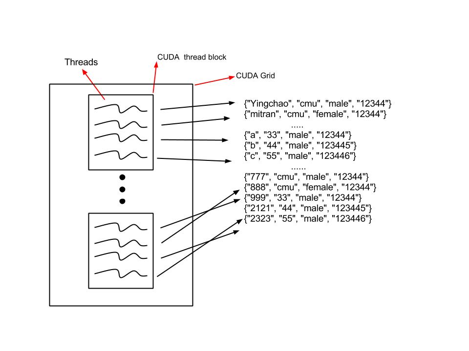
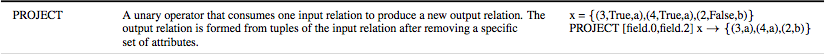

Project Proposal:
SQL on GPU with Efficient Relational Algebra Algorithms
Yingchao Liu (yingchal) and Mitra Raman (mitrar)
Summary
We want to analyze the performance of implementing some database operations on a GPU versus a CPU. Since each operation can be expensive based on the size of the database and the number of disk accesses the operation requires, we believe that we can significantly speed up each operation by changing how and where the database tuples are stored, and how we access the tuples. We plan on implementing the relational algebra operations PROJECT, SELECT, and JOIN on GPU machines to simulate the relational database queries in order to investigate the viability of accelerating a database on GPU. We will use MemSQL on a multi-core CPU as reference for analyzing the performance of our GPU version.
Background
The database operations are usually regarded as slow since the inevitable access to disk, this is where MemSQL comes in. MemSQL places data directly into a memory system and translates SQL statements into C++ for the utmost optimization in query execution, which enables Memsql to write and read data at incredible speeds compared to reading and writing data from the disk.
However, the speedup can vary depending on the number of CPU cores provided to us. For certain types of queries, the tuples that are being accessed are highly independent each other so they have high potential to benefit from parallelism. Specifically, we can implement each thread to work on each tuple simultaneously and the performance of computing a large volume of data would be largely promoted.

Our project is to enhance the performance even more. To do this, we need to implement an in-memory database and an even faster way to ingest large volumes of data. So we plan to store the data in the GPU's memory and utilize the GPU's high computation power to implement relational algebra.
Relational algebra is a procedural query language, which consists of a set of operations that take one or two relations as input and produce a new relation as their result. The fundamental operations are: select, project, union, and set difference. Operators in relational algebra are not necessarily the same as SQL operators, even if they have the same name. For example, the SELECT statement exists in SQL, and also exists in relational algebra. These two uses of SELECT are not the same. The DBMS must take whatever SQL statements the user types in and translate them into relational algebra operations before applying them to the database.
Challenge
The biggest challenge will be to figure out how best to utilize the memory hierarchy of the GPU to make memory accesses more efficient (i.e. choosing between global, shared, and register variables). We must find space to store huge amount of data in the GPU's memory, and at the same time to make sure we still have enough space for our operations to work on as well as storing the resulting tupples.
Another challenge with this implementation is the potential of divergence. For example, a tuple might have many attributes, where some attributes of certain tuples might satisfy a user-defined predicate while others will not. In this case divergence appears, so some threads could be idle for a long time while a few the threads will be super busy working on the qualified tuples.
Additionally, this implementation faces the problem of maintaining work-load balance among the threads. Since we cannot break down a single query into multiple queries, we must figure out a way to preemptively assign SQL queries to threads in order to maintain a moderate work-load balance throughout.
A further challenge is to learn what types of queries make a GPU-based database viable. After much research, testing, and analysis, we should be able to solve this issue and optimize the implementation based on these queries. However, it will be a challenge to come to this conclusion and make the correct optimizations.
Resources
Our three main resources are listed below in no level of importance. They each serve separate yet important purposes. The CUDA starter code that we will use from Assignment 2 is extremely important in helping us get started and understand the nuances of CUDA programming. We need to analyze the small semantics of the code that were not the focus of Assignment 2 but are imperative to functional CUDA programming. MemSQL is the backbone of our entire project, since we cannot execute the project idea and analyze our results without a functional and dependable referral source. Also, we can use MemSQL as a reference for how to implement the GPU version of the database. Thirdly, we are basing most of our algorithmic approach off of the research paper listed below. This paper was developed by four students from Georgia Institute of Technology and one researcher from NVIDIA. The paper details the problems with standard SQL database queries, a relational algebraic approach to speeding up the queries, and implementation of the algorithms with data structures on GPU. Although this paper details much of the algorithms that we plan to use in our implementation, we must perform even more analysis and fine-tuning of the algorithms to better serve our purpose.
- CUDA setup code, based off of Assignment 2 starter code
- MemSQL
- "Efficient Relational Algebra Algorithms and Data Structures for GPU", NVIDIA Research & Georgia Institute of Technology
The research paper has given us relational algebra examples for each of the three database operations based on the purpose of the operations.

Goals/Deliverables
PLAN TO ACHIEVE
We would like to successfully implement both PROJECT and SELECT operations in CUDA, and analyze and compare their results to their performances on MemSQL.
HOPE TO ACHIEVE
If we can complete implementations for PROJECT and SELECT, we would like to implement the JOIN operation. This the least efficient operation in the current relational database architecture, so we feel that it will be difficult to improve the performance of this operation on GPU. However, if we are able to complete the implementation for JOIN, it will give us very interesting analysis to apply to the overall performance of the GPU compared to the traditional database structure.
EXPECTED PERFORMANCE
By comparing the performance of the operations on GPU with MemSQL, we plan to get a decent speed up of 2x-3x for all operations. However, these speedups are not very specific and cannot be guaranteed.
Platform
Since we are using GPU instead of CPUs, we will have access to all of the GPU's cores as well as its memory which will hold lots of tuples (to mock a database). This implementation is not specifically for CUDA, but we chose it because it is the most familiar language for us to use on GPU.
Proposed Schedule
| Week |
What We Plan To Do |
| Apr 9-12 | Download MemSQL and load 2-3 GB of testing data into MemSQL |
| Apr 13-18 | Setup the CUDA program and finalize teh relational algebra algorithms that we will be using for each operation. |
| Apr 19-26 | Get the first iteration of the program working for the PROJECT operation and begin work on SELECT and JOIN operations. Present this working version for the checkpoint. |
| Apr 27-May2 | Finalize the algorithm for PROJECT and performance analysis. Finish working on SELECT. |
| May 3-9 | Finish working on JOIN and have performance analysis for all operations completed. |
| May 10-13 | Finish any remaining program tweaks and performance analysis. Compile the final report and presentation. |